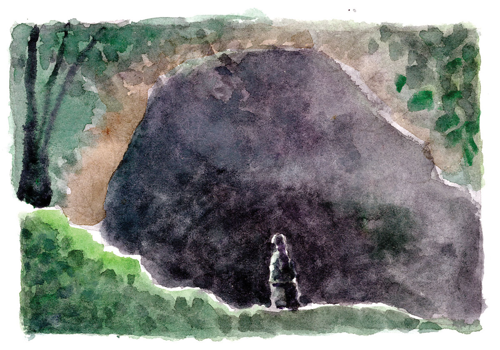
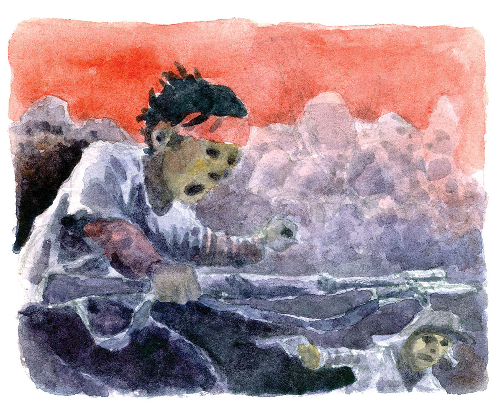

Pung-olanan sa Ulo
Sa atong henerasyon, para sa usa ka yano nga batan-on, ang pagsulod sa langob usa ka makalingaw apan dili kanunay nga kalihukan. Gani may mga mapugos lang tungod sa sugo sa eskwelahan.
Sa panahon sa Ikaduhang Gubat sa Tibuok Kalibutan, nahimong pinuy-anan sa atong mga katiguwangan ang mga langob nga karon mga kabog na lang ang hikaplagan. Ang mga langob ang naghatag og landong sa kaluwasan ug gamay nga luna sa kahamugaway. Ngitngit man, sa panahon sa kagubot, mas hayag ang posilibilidad nga mabuhi ang nanimuyo dinhi kaysa uban pang lugar.
Apan, natural sa mga Sugbuanon nga dili moatras sa bisan unsang pagsuway nga ilabay sa ilang agianan. Dili nila tugutan nga hangtod sa hangtod magtago ilawom sa kangitngit sa langob ug pasagdan nga molapad pa ang gahom nga gihuptan sa mga dili angayan. Luyo sa ilang pagpaningkamot nga mamahimong luwas ang ilahang mga banay sulod sa mga langob, sa gawas sa langob nakigbisog usab sila alang sa kagawasan gikan sa mga kamot sa mga abusadong dayo. Gamit ang ilang kusog ug mga lumadnong hinagiban ug mga pamaagi, nagkahiusa sila aron hingusgan ang pagbawi sa katungod sa ilang kaugalingong yuta. Katungod nga buot ihikaw kanila sa mga Hapon sa bayolente nga mga pamaagi.
Kon ang langob ang tagoanan sa mga kababayen-an ug mga kabataan, sa mga taas nga lugar usab ang abutanan sa pipila ka mga bayaning hangtod karon wala’y palad nga mapasidunggan sa ilang katakos inubanan sa maayong mga katuyoan. Gilangkuban kini sagad sa mga kalakin-an. Sa pusod nga bahin sa isla sa Sugbo, nahimutang ang usa ka habog nga bukid. Tungod sa kahabog niini, madungog sa mga duol nga lugar sa ubos si kinsa mang mosiyagit gikan sa tumoy sa maong bungtod. Gigamit kini sa mga Sugbuanon nga bentaha batok sa mga kontra. Dinhi magtinawganay sila sa panahon nga kinahanglan silang magtapok.
Gigamit nila ang maong taas nga lugar nga abutanan, diin adto nila sabutan ug ipahimutang ang ilang mga lakang sa pagpukan sa di makiangayon nga pangagamhanan sa mga langyawng Hapones. Dinhi nila giplastada ang papel sa isig sakop sa gubat. Kon makadungog na gani sila sa tawag sa kauban gikan sa bungtod nga mag-ingon, “Adto na ta sa Tawganan, gikinahanglan kita sa atong katawhan.” Dinhi nagtubo ang liso sa paglaom nga ang kinawat nga yuta mabalik pa sa mga nanag-iyang tinuod. Liso nga dugay nang natisok sa mga langob diin sila nanagtago.
Sa tupad sa bukid nga Tawganan, may lain pang mga kabungturan nga ubos ang nahimutangan. Dinhi sagad mahitabo ang pagpinatyanay tali sa mga Sugbuanon ug mga Hapones.
May usa ka dapit nga nisaksi sa sikit nga panagbangga sa kahanas duha ka partido. Dinhi, ang mga sundawo dili mosungasong sa pagpakiggubat. Tungod kay pareha ra ang puwersa sa opensa ug depensa dinhi, wala’y mogawas nga mananaog. Nahimo kining maong dapit nga sentro sa pagsung ug pagbalik sa kampo sa mga sundawo. Sa pagpadayong pagsulong-atras, sulong-balik kampo, sulong-atras sa mga sundawo, naila kining maong lugar isip “Balik-Sulong.”
Laing ubos nga bukid mao ang naila sa ngalan nga Pung-olanan. Dinhi nahitabo ang dugay nga panag-engkuwentro tali sa mga Hapones ug sa atong mga bayani. Dinhi nadungog ang mga siyagit sa kaisog, ang mga hugyaw sa pakigbisog ug ang kuyaw nga singgit sa mga Sugbuanong dili mosibog. Kini mao ang entablado diin ang sayaw mao ang pagbunlot sa sundang, ang pagkablit sa pusil, ug ang pagwara-wara sa mga pinuti. Kini nahimong teatro diin ang musika mao ang hadyong sa mga bala ug panagsingki sa uban pang mga armas. Kini mao ang salida, diin may pipila ka mga bida, nga pagkahuman sa drama, dili na kapauli kay ang ulo ug lawas nagbuwag na. Kini mao ang drama, diin ang paghilak dili sama sa luha sa mata nga sa huyuhoy sa hangin mahanaw ra, kon dili hilak sa dugo nga nagagikan sa unod, lapos sa bukog, nituhop sa yuta nga bisan ang pinakakusog nga uwan dili na makabanlas pa. Dinhi mao ang husgado diin ang mga argabyado mao pa ang gisentensyahan ug diha-dihang giputlan sa ulo.
Kini mao ang lugar nga, sakit man sa dughan, naila sa pangan nga “Pung-olanan sa Ulo”.
Kining nagtupad nga mga lugar mao ang mga saksi sa pagtisok, pagtubo, pagpamuwak, pagpamunga ug sa pagkamatay sa kahoy sa kagubot. Kahoy nga gibuboan sa dugo sa atong mga katiguwangan. Kini maong mga luna ang kabilin sa atong sakit nga kagahapon apan mapasigarbuhon natong palandungon.
Sa paglabay sa panahon, ang kanhi Tawganan sa atong mga bayani naila sa ngalang Sitio Tawagan ug ang kanhi sentro sa pagsulong-atras sa mga sundawo naila sa ngan nga Sitio Balisong. Kining duha ka sitio sakop sa Barangay Sirao sa bukid nga bahin sa dakbayan sa Sugbo. Tupad niini mao ang Barangay Pung-ol. Tipik ra kini nga kabahin sa mga kabilin sa pakigbisog sa mga Sugbuanon batok sa day-ong malupigon.
Nagkatag pa sa nagkadaiyang lugar sa Sugbo ang uban pang ebidensya sa atong pagpangga sa atong yuta bisan pag nituang na ang hulga sa gubat. Kon kaniadto sila ang mga dapit sa mga putol nga ulo, sa pagkakaron ang maong mga lugar abunda na sa kabuwakan, nga dili lamang isip panginabuhian kundili usa usab ka maanindot nga talan-awon alang sa mga apo sa mga nangamatay aron kining lunang ilang gitamnan mapanag-iya sa hingpit. Kon kaniadto ang lugar lubnganan sa mga apuhan, karon ania manginabuhi ang mga apong nabinlan. Apan labaw pa sa yuta, bililhon nila nga kabilin mao ang kalinaw. Tungod sa atong pait apan mabulukong kagahapon, palaran ang atong henerasyon sa kagawasan nga atong naangkon.
